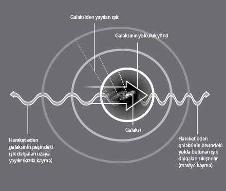

Bir rahip, güvercinler ve Planck tüm
zamanların en büyük patlamasını nasıl kanıtladılar?
Nigel Henbest, The History of Astronomy (Astronominin Tarihi)
gibi kitapların yazarı ve bilim belgeseli yapım şirketi Pioneer'in
kurucularından
"Büyük Patlama kuramı bilimsel terimlerle anlatılamayan akıldışı ve yenilip yutulması zor bir süreç." 1949 yılıydı ve astronom Fred Hoyle BBC radyo stüdyosunda oturmuş; yeni çıkan bir kuramın aleyhine konuşuyordu. Bu kurama göre evren milyarlarca yıl önce benzersiz bir olaydan, artçı dalgalarını bugün bile görebildiğimiz müthiş bir patlamadan oluşmuştu.
O zamanlar Hoyle patlama için bulduğu, aceleye gelmiş ismin her yere yayılacağını nereden bilebilirdi? Büyük Patlama modern fiziğin vazgeçilmez bir parçası oldu.
Parlak bir astronom ve matematikçi olan Hoyle panspermia hipotezinden (yeryüzüne hayatın tohumlarının göktaşlarından atıldığına dair görüş) yıldız nükleosentezi kuramına (elementlerin çekirdeklerinin yıldızlarda oluştuğuna dair kuram) kadar çok sayıda sarsıcı kuram üzerinde çalışıyordu. Bilime bunca katkı sağlamış bir adam olan Hoyle'a inanılması güç, ama hiç Nobel Ödülü verilmedi. Bunun nedeni Cambridge Üniversitesi'ndeki meslektaşlarıyla ve Nobel Komitesi'yle arasını bozması olabilir. Fakat daha muhtemel nedeni, ileride tüm zamanların en büyük fizik yarışında yanlış ata oynamasıydı.
Hayatı boyunca Hoyle evrenin Kararlı Hal modelini destekledi. Bu modelde evrenin başı sonu yoktur ve muntazam şekilde damlayan musluk gibi madde sürekli yaratılır. Bu şimdilerde kabul gören Büyük Patlama kuramıyla çelişir. Büyük Patlama kuramına göre hayatın ilk nefesinde (bir yoktosaniyenin yüz milyarda biri, yani 10-31 veya 0,0000000000000000000000000000001 saniyede) evren, proton diye bilinen minik atomaltı parçacığından milyarlarca kez küçük iken bir futbol sahası büyüklüğüne ulaştı. Sonraki bir yoktosaniyenin yüz milyonda birinde evren temel parçacıklar ve antiparçacıklardan oluşan çorba benzeri bir varlığa dönüştü ve trilyonlarca Fahrenheit derece gibi akıl almaz sıcaklıkta iken kütleçekimi gibi doğa kuvvetleri ayrıştıkça soğumaya başladı. Bir mikrosaniye sonra evren proton ve nötronların oluşmasına yetecek kadar soğudu ve ilk birkaç dakikada protonlarla nötronlar birleşerek helyum ve hidrojenin çekirdeklerini oluşturdular.
Sonraki 300.000 yıl boyunca 100 milyon Fahrenheit derece kadar sıcak olan evren, parçacıklarla protonlar etkileşime girdiğinden "sisli" görünüyordu. Protonlar, ancak 100 milyon ışık yılı çapında bir büyüklüğe ulaştığında elektronları "ele geçirdi", böylece ilk atomlar oluştu ve ışıma olarak evrene yayıldı.
Hubble'ın Kopya Kağıdı
Evrenin dev bir patlamadan oluşmuş olabileceği fikrini bunca insan arasında ortaya ilk atan kişi Belçikalı bir rahipti. Einstein'ın meşhur E=mc2 formülü üzerinde çalışan Georges Lemaître büyük patlama üzerine düşüncesini, 1927'de büyük fizikçiye açtı. Einstein statik evrene inandığından bu fikre kuşkuyla yaklaştı.
Öte yandan Lemaître'nin fikri ABD'li astronom Edwin Hubble'ın bulduğu sanılan sonuçlarla gayet güzel örtüşüyordu. Hubble yasası bir galaksinin hızının dünyaya olan uzaklığıyla orantılı olduğunu belirtiyordu ve Hubble daha önce yapılmamış bir şeyi yaparak galaksilerin dünyaya olan mesafelerini ölçmüştü. Fakat hızlarını hesaplamayı başaramamıştı.
"Şu noktayı açıklığa kavuşturmak istiyorum," diyor Henbest. "Herkes Hubble'ın evrenin genişlediğini bulduğunu söylüyor, ama Hubble gerçekte Slipher adındaki bir adamın elde ettiği sonuçları kullandı."
1900'lerin başında ABD'li astronom Vesto Slipher spiral nebulaların nasıl döndüğünü araştırıyordu. Arizona'daki Lowell gözlemevinde bu şaşırtıcı oluşumları incelerken, zihninde bunların aslında dünyadan uzaklaştıkları fikri şekillenmeye başladı. Fakat son hamleyi yapan Hubble oldu. 1929'da Slipher'in bir makalede yayınlanan bulgularını kullanarak kozmolojik "kızıla kayma"yı kendi keşfiymiş gibi lanse etti. Buna göre uzak bir cisimden gelen ışık, dünyadan uzaklaştıkça spektrumun kızıl kısmına doğru kayıyordu. Kızıla kayma evrenin genişlemesinden kaynaklanıyordu.

Kızıla kaymayı izah etmek için ambulans sireni iyi bir benzetmedir. Ambulans size ne kadar yaklaşırsa sirenin sesi o kadar yükselir. Ambulans uzaklaştığında ise sesi azalır. Aynı şekilde, hareketli bir yıldız veya galaksi dünyaya yaklaştıkça ışığı spektrumun mavi ucuna, ne kadar hızlı uzaklaşırsa ışığı da spektrumun o kadar kızıl ucuna kayar.
İsminin bir uzay gemisine verilmesine rağmen, "Slipher yasası" diye bir yasa hiç var olmadığından bu adam namına üzülebiliriz. Yine de Büyük Patlama'dan sonra kalan radyasyonun kendini kozmolojik kızıla kayma şeklinde göstermesinin keşfedilmesi müthiş bir buluştur. Bu buluş da Büyük Patlama'yı kanıtlamanın yolunu açmıştır.
Güvercin Kanıtı
Ne kadar korkunç olsa da, savaşın yenilikler doğurduğu bir gerçektir. Radyo astronominin atası II. Dünya Savaşı'nda kullanılan radardı. Savaştan sonra dünyanın ilk radyo teleskoplarından biri fizikçi Martin Ryle tarafından bir Cambridge tesisinde kuruldu. Ryle evrenin derinliklerini gözlemlerken galaksilerin giderek yakınlaşarak kümeleştiğini fark etti. Bunun tek bir nedeni olabilirdi: Evren geçmişte daha küçüktü. Dolayısıyla, zamanın başlangıcına dönüp baktığımızda evrenin son derece küçük bir noktadan oluşmaya başladığını söyleyebilir miydik?
1964'te iki ABD'li fizikçinin buluşu bu fikri destekledi. Arno Penzias ve Robert (Bob) Woodrow Wilson, New Jersey Holmdel'deki Bell Laboratuvarı'nda bir radyo teleskobuyla gökyüzünü gözlemliyorlardı. Sinir bozucu bir şekilde teleskoptan sürekli tıslama sesi geliyordu.
"İlk başta Penzias ve Wilson bunun teleskobun antenindeki güvercin pisliklerinden kaynaklandığını düşündüler. Bu nedenle güvercinleri uzaklaştırdılar," diyor Henbest. "Posta güvercinleri tekrar tekrar geri döndüler. Fakat sonunda temelli uzaklaştırıldılar." Ancak tıslama durmadı. Nihayet Penzias ve Wilson bu sesin gökyüzünün her yerinden geldiğini keşfettiler.
Yakındaki Princeton Üniversitesi'nde çalışan Robert Dicke, şayet Büyük Patlama olduysa ondan geriye radyasyon kalması gerektiğini düşünüyordu. Yaratılış sonrasındaki ışımayı saptamak için bir teleskop yapmayı planlıyordu. Neyse ki Penzias ve Wilson'ın bulgularının haberini alarak onlarla temas kurdu. Onları epey bir zahmetten kurtardı ve ikiliye 1978'de Nobel Fizik Ödülü'nü kazandırdı.
Yumrulu Evren
Kararlı hal kuramının tabutunun son çivisi, Kozmik Arkaplan Kaşifi'nin (COBE) 1989 yılında uzaya gönderilmesiyle çakıldı. Uydunun görevi geçmişe göz atıp yavru evreni yakalamaktı. Aradan üç yıl geçtikten sonra nihayet Kararlı Hal kuramına ölümcül darbeyi indirecek bir enstantane yakaladı.
Büyük Patlama'nın gerçekleşebilmesi için erken evrenin sisi içinde yumruların ve tümseklerin olması gerekirdi. Tüm uzaya yayılan "mikrodalga arkaplan ışıması"nın önceki izleri bu gizli işaretleri saptamaya yetecek kadar hassas değildi, fakat COBE diğer uydulardan bir adım ileriye gitti. İnanılmaz ölçüde hassas bir termometre gibi uzayın derinliklerinin sondajını yaptı ve evrendeki bilinen en eski cisimleri keşfetti. Zamandaki "buruşukluklar" denilen bu cisimler şimdiki galaksilerin atalarıydı. Bunlar ancak muazzam bir patlama sonucunda oluşmuş olmalıydı: Büyük Patlama.
Temelleri atıldıktan sonra kuram COBE'nin halefi WMAP (Wilkinson Mikrodalga Anizotropi Sondası) uydusu sayesinde gelişti. "Bana göre Büyük Patlama bir kuram değil, gerçektir," diyor Henbest. "İlkin WMAP, şimdi de Planck uydusu tarafından yapılan gözlemler bunu kanıtlıyor. Bu ışımanın tek kaynağı Büyük Patlama sonrasındaki parlamadır."
Başka bir kanıt daha var. Söz konusu kurama göre Büyük Patlama ile oluşan gazların yüzde 75'i hidrojen, yüzde 25'i de helyum olmalı. "Evren de tastamam bunlardan oluşmaktadır," diyor Henbest. "Ve evrenin başlangıç zamanını tespit etmenin üç farklı yolu bu konuda fikir birliği içinde. 'Filmi geriye sararak' galaksilerin ne zamandan beri birbirlerinden koptuklarını ölçerseniz, yaklaşık 10-15 milyar yıl gibi bir rakam elde edersiniz. Mikrodalga arkaplan ışıması da gerçekten aynı sonucu veriyor: 13,7 milyar yıl. Ayrıca en eski yıldızların yaşı yaklaşık 12-13 milyar yıl. Bütün bu tarihlerin neredeyse aynı olması tesadüf olamaz."
Gelecek
İnsan artık kabul edilen bir gerçek olan Büyük Patlama'dan önce ne vardı diye merak ediyor. Uzun çağlar boyunca bir dizi "Büyük Çatırtı" içinde genişleyip büzüşen evrenlerde başka Büyük Patlamalar oldu mu?
Astronomlar şimdi evrenin sadece genişlemediğini, aynı zamanda hızlandığını da biliyorlar. Bunun kaynağı da henüz açıklanmamış bir olguda yatıyor: Karanlık enerji. Hızlanan bir evren endişe yaratsa da, daha evrenin son nefesini vermesine zilyonlarca yıl (1'den sonra 100 tane 0) var.